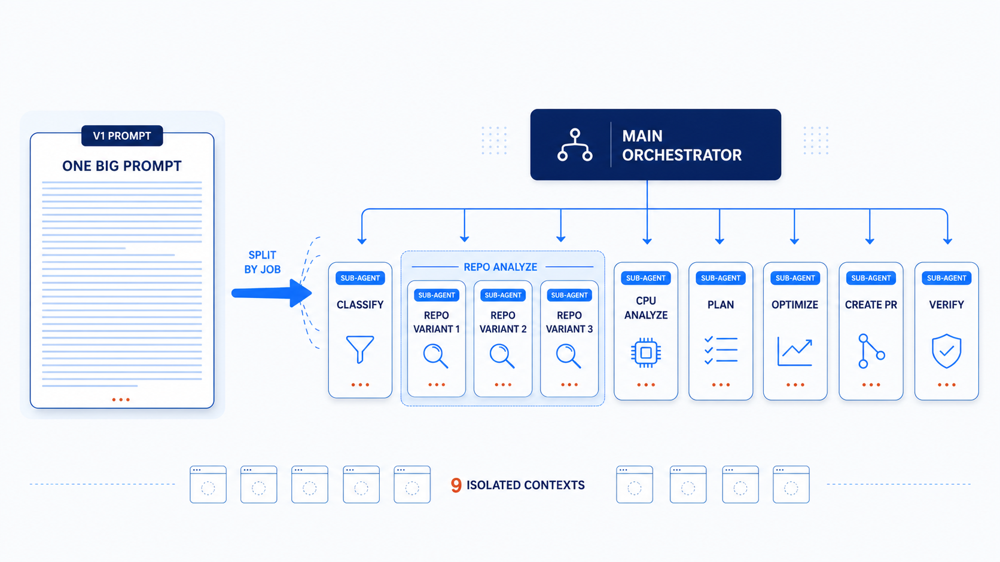

AI IN PRODUCTION · TITLE
v8 · 2026
01
Tech talk · 2026
AI in
Production
How We Built an Autonomous Agent to Optimize
Millions in Capacity
at Salesforce
Tuhin Kanti Sharma
· Principal Software Engineer, Development Experience
LinkedIn
linkedin.com/in/tuhin-kanti-sharma
Blog
engineering.salesforce.com/author/tuhin-sharma
Newsletter
linkedin.com/newsletters/swe-in-the-age-of-ai-7342972190482472960
Scan to subscribe
FIG. 00 · COVER
AI IN PRODUCTION · ABOUT ME
About the speaker
02
About me
Tuhin Kanti Sharma
Principal Software Engineer, Development Experience · Salesforce
DevX Architect focused on building a safe, AI-driven developer experience.
Currently building the Next Gen Feature Flags platform.
Previously built the release orchestration and synthetic monitoring platform.
Builds AI agents as a hobby, to automate common developer workflows.
External talks: DeveloperWeek 2026, CNCF gRPC Conf 2020, and UtahGeekEvents.
AI IN PRODUCTION · AGENDA
What we will cover
03
Agenda
How I built an agent that
worked.
01
The capacity problem — Helm sprawl across thousands of repos
02
v1 → v2: where the prompt and sub-agents broke
03
The reframe:
Agent = Model + Harness
04
Two kinds of work: reasoning vs structured (ILP)
05
Context engineering → a plan I trust, every run
AI IN PRODUCTION · CH 1
Chapter opener
04
Chapter one
01
The
Problem.
Most of our fleet is idle. The "obvious" fix isn't obvious at all.
AI IN PRODUCTION · CH 1
The fleet is idle
05
Across the Salesforce fleet
86%
of containers were running at less than
20%
of their requested CPU.
Translation · almost half our cloud bill was paying for compute nobody was using
AI IN PRODUCTION · CH 1
The hook
06
The hidden question
Right-size it
where?
Before you can change the CPU, you have to know which config layer actually controls the request.
AI IN PRODUCTION · CH 2
Config sprawl · all the options
07
Helm charts · scattered across thousands of repositories
Same value.
Six different homes.
CPU requests
one conceptual knob
· STRUCTURED CONFIG
<repo>/config/helm/<chart>/
values.yaml · defaults.yaml
structured config · highest precedence
· HELM ADDON
<repo>/addons/helm.tf
helm_chart_values { cpu = ... }
infra addon block
· CHART DEFAULTS
<chart>/values.yaml
cpu: "500m"
the "obvious" place
· ENV OVERRIDES
values.dev.yaml · prod.yaml
region/us-east.yaml · …
per-env, per-region YAMLs
· TERRAFORM
terraform/…/main.tf
locals { cpu = var.cpu ?? "900m" }
non-helm deployments
TRAP
· HARDCODED TEMPLATES
templates/*.yaml
cpu: "1500m" # hardcoded
no override can save you
And the
"obvious"
place silently loses to an SC override three directories away.
AI IN PRODUCTION · CH 2
Chapter opener
08
Chapter two
02
Let's Build an
Agent.
An autonomous agent that right-sizes these Helm charts safely at scale — driven by real-time utilization data.
AI IN PRODUCTION · CH 2
Primitive inside each stage
09
What we built first
The early agent was a state machine wrapped around
model/tool loops.
MODEL
reasons · decides
· TOOL CALL
list · read · search · edit
· OBSERVATION
stdout · file · diff
· GOAL CHECK
done? → next step
Outer harness was deterministic.
The hard work happened inside the loop.
AI IN PRODUCTION · CH 2
The prompt kept growing
10
Where v1 ended up
With prompts, we could right-size the standard
30%
.
The growing prompt failed for the
rest
.
· v1
One growing prompt
Every new repo shape became another natural-language instruction.
· v2
Split into specialists
So we tried the obvious next move: split the work into specialists.
AI IN PRODUCTION · CH 2
The architecture · v2
11
v2 · the textbook decomposition
One orchestrator.
A pipeline of specialists.

Specialization. Context isolation.
Surely this has to scale right?
AI IN PRODUCTION · CH 2
Two PRs · same input
12
Same code · same utilization data
Run 1 — 3 files. Run 2 — 5 files.
Different plan.
RUN 1
3 files · +3 / −3
#1247
PR — rightsize CPU for
service-foo
M
config/global.yaml
cpu: 0.8
→
cpu: 1.5
M
config/region/us-east.yaml
cpu: 1.2
→
cpu: 1.7
M
config/instance/svc-23.yaml
cpu: 2.0
→
cpu: 2.4
3 modified · 0 added
RUN 2
5 files · +5 / −4
#1248
PR — rightsize CPU for
service-foo
M
config/global.yaml
cpu: 0.8
→
cpu: 1.4
A
config/env/prod.yaml
NEW
+ cpu: 1.6
M
config/region/eu-west.yaml
cpu: 1.0
→
cpu: 1.3
M
config/region/ap-south.yaml
cpu: 0.9
→
cpu: 1.2
M
config/instance/svc-23.yaml
cpu: 2.0
→
cpu: 2.1
4 modified · 1 added
Same input. Same code.
Different plan.
AI IN PRODUCTION · CH 2
Two-word definition
13
So we stopped tuning the model
A slot machine isn't a model problem. So what was I actually building?
Agent
=
Model
+
Harness
Everything that isn't the model — that's where the leverage lives.
AI IN PRODUCTION · CH 3
Two Kinds of Work
14
Chapter three
Two Kinds
of Work.
Back to the bug.
AI IN PRODUCTION · CH 3
Two buckets
15
The split that matters
Every step of an agent pipeline is one of
two kinds of work
.
Bucket 01
Reasoning
Discover how CPU is configured across
this
repo.
Inputs
ambiguous.
No single correct path.
Tolerance for ambiguity is the LLM's
superpower
.
The agent has to
adapt
.
Want the creative writer here.
Bucket 02
Structured
Compute the optimal CPU plan
across
all instances.
Inputs
well-defined.
Constraints known.
Answer is
mathematically derivable.
Same input →
same answer
, every time.
This is not creative writing.
AI IN PRODUCTION · CH 3
The pivot
16
We re-architected the middle.
Fewer moving parts, a stronger spine.
MAIN AGENT
CLASSIFIER
REPO ANALYZER
CONFIG LOC.
VALIDATOR
OPTIMIZER
SCOPE PICKER
PLAN APPLIER
PR WRITER
REVIEWER
structured output: json
optimization plan
DISCOVER
LLM · reasoning
ILP SOLVER
deterministic · math
APPLY
LLM · reasoning
Reasoning → Structured → Reasoning
AI IN PRODUCTION · CH 3
The right tool
17
a solver does this in seconds
Integer Linear Programming.
Same answer every run.
COVERED
0/12
OPTIMAL
0/12
KNOBS
0
override scopes · most specific wins ↓
resolved CPU per instance
(cores)
ideal
(cores)
CPU (CORES) →
12 INSTANCES →
A solver picks the
smallest set of knobs
that clears every floor — without flailing.
solving
▶ prob.solve()
↺ Reset
AI IN PRODUCTION · CH 3
The most important sentence
18
The sentence
The best AI agent we built was the one that knew
when not to use AI
.
AI IN PRODUCTION · CH 3 · THE v3 ARCHITECTURE
Discover → Solver → Apply
19
· CONTEXT ENGINEERED · THE PLAN STOPPED DRIFTING ✓
01
DISCOVER
LLM
02
ILP SOLVER
deterministic
· 0 tokens
03
APPLY
LLM
PR CREATOR
sub-agent
PR
✓ Reasoning · Structured · Reasoning
Each tool doing
what it's best at.
Safe by construction · tunes CPU
requests
only · leaves
limits
for scaling headroom · ships as a reviewable PR
AI IN PRODUCTION · RECAP
The story so far
20
The
story
so far.
01 · the agent
v1 → v3
Three generations to a plan we trust.
V1
One ReAct agent.
Every rule in one prompt.
Bloated scroll.
V2
Nine sub-agents.
Beautiful diagram.
Same input → two different PRs.
V3
Discover → Solver → Apply.
Two LLMs + ILP.
Same plan, every run.
Reasoning → Structured → Reasoning. Each tool doing what it's best at.
02 · the reframe
the fix
Agent = Model + Harness.
The fix was never a bigger prompt or a better model.
It was moving the
structured work out of the LLM
.
Reasoning stays with the LLM; the
math goes to a solver
.
Same model · different harness ·
the harness is where the leverage lives.
03 · take-home
what to keep
Three lessons for the next agent.
01
Separate reasoning from computation.
Ambiguity to the LLM, math to code.
02
Use deterministic systems for deterministic problems.
Same input → same answer.
03
Improve the harness, not the prompt.
The leverage is around the model.
Best practice is not more prompting. It is
better harness.
Iterating on context engineering · accuracy toward 100%
Same input.
Same plan.
Every run.
In production across thousands of services —
millions in capacity reclaimed.
AI IN PRODUCTION · END
Q & A
21
End card
Questions
?
Also accepting
unsolicited horror stories
about your own agents.